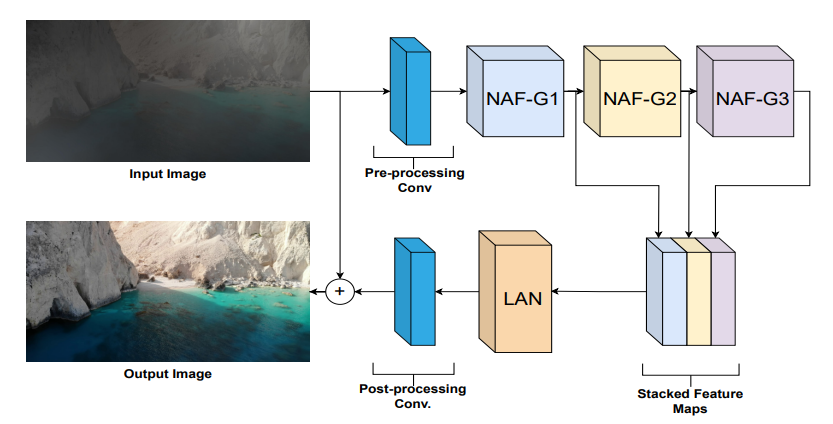
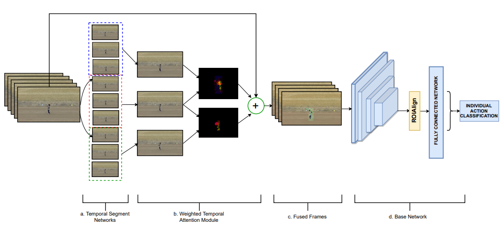
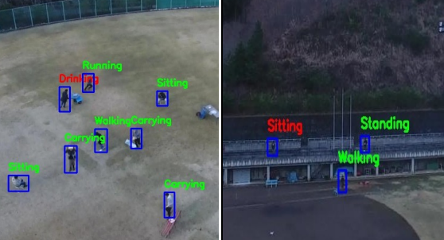
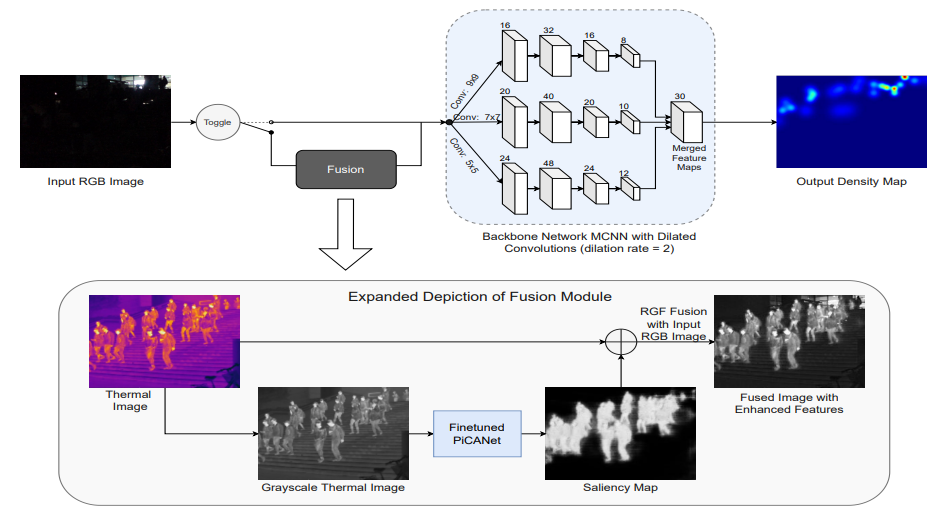
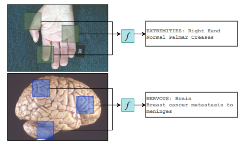

|
Esha Pahwa I am a Member of Technical Staff at Adobe, where I work on integrating Generative AI with Adobe Campain products. In early 2023, I had the privilege of joining Google Research India as a Research Associate in the Shopping Ads team, where, mentored by Gaurav Srivastava and Prateek Jain. I focused on advancing product retrieval techniques using the JAX framework for my Bachelor's thesis. In 2022, I embarked on a remarkable journey of learning and contribution. As a summer research intern at the Media and Data Science Research Labs (Adobe Research), I collaborated with Balaji Krishnamurthy, focusing on lookalike modeling and segment prediction by leveraging second-party data from diverse brands. The same year, I was among the six women across India awarded the Adobe Women in Tech Scholarship. This was also the year I explored solutions to the mode collapse problem in GANs during my first Bachelor's thesis as a visiting researcher at CVC, Barcelona in collaboration with Prof. Luis Herranz. Prior to that, I was honored to receive the Grace Hopper Celebration Scholarship in 2021 and the prestigious research fellowship by ARTPARK IISc in 2022, enabling me to collaborate with Prof. Pratik Narang on image restoration projects throughout the year, contributing significantly to the field of image processing and restoration. I have also worked in the field of super-resolution during an internship with the VCG group at Harvard University, guided by Prof. Hanspeter Pfister and mentor Salma Abdel Magid. Email / CV / Google Scholar / Linkedin / Github |
ResearchI'm interested in computer vision, natural language processing, and machine learning. Much of my research is based on the applications of these topics in real-world scenarios. |
|  |
LVRNet: Lightweight Image Restoration for Aerial Images under Low Visibility (Student Abstract)
Esha Pahwa*, Achleshwar Luthra* Pratik Narang AAAI 2023 (Oral Presentation) paper / project page / poster / slides / code / bibtex We generate the LowVis-AFO dataset, containing 3647 paired dark-hazy and clear images. We also introduce a new lightweight deep learning model called Low-Visibility Restoration Network (LVRNet) |
|  |
SWTA: Sparse weighted temporal attention for drone-based activity recognition
Santosh Kumar Yadav, Esha Pahwa, Achleshwar Luthra, Kamlesh Tiwari, Hari Mohan Pandey International Joint Conference on Neural Networks (IJCNN), 2023 paper / bibtex We propose a novel Sparse Weighted Temporal Attention (SWTA) module to utilize sparsely sampled video frames for obtaining global weighted temporal attention. The SWTA network can be used as a plug-in module to the existing deep CNN architectures, for optimizing them to learn temporal information by eliminating the need for a separate temporal stream. |
|  |
DroneAttention: Sparse weighted temporal attention for drone-camera based activity recognition
Santosh Kumar Yadav, Achleshwar Luthra, Esha Pahwa, Kamlesh Tiwari, Heena Rathore, Hari Mohan Pandey, Peter Corcoran Neural Networks 2023 (Journal Paper) paper / bibtex This is the extended version of the study conducted for the proposed SWTA network. It contains a detailed survey of the existing approaches with an elaborate explanation of the SWTA network and its components. |
|  |
Conditional RGB-T Fusion for Effective Crowd Counting
Esha Pahwa*, Achleshwar Luthra*, Sanjeet Kapadia*, Shreyas Sheeranali* IEEE ICIP 2022 (Poster Presentation) paper / poster / talk / code / bibtex We introduce a novel architecture Toggle-Fusion Network (TFNet) that effectively utilises a multimodal dataset, RGBT-CC, containing pairs of thermal and RGB images. |
|  |
Medskip: Medical report generation using skip connections and integrated attention
Esha Pahwa*, Dwij Mehta*, Sanjeet Kapadia*, Devansh Jain* Achleshwar Luthra ICCV: CVAMD Workshop 2021 (Poster Presentation) paper / poster / bibtex We propose a novel architecture of a modified HRNet which includes added skip connections along with convolutional block attention modules (CBAM). We evaluate our model on two publicly available datasets, PEIR Gross and IU X-Ray. |
Miscellanea |


{kind=link}
|
Feel free to steal this website's source code. Do not scrape the HTML from this page itself, as it includes analytics tags that you do not want on your own website — use the github code instead. Also, consider using Leonid Keselman's Jekyll fork of this page. |